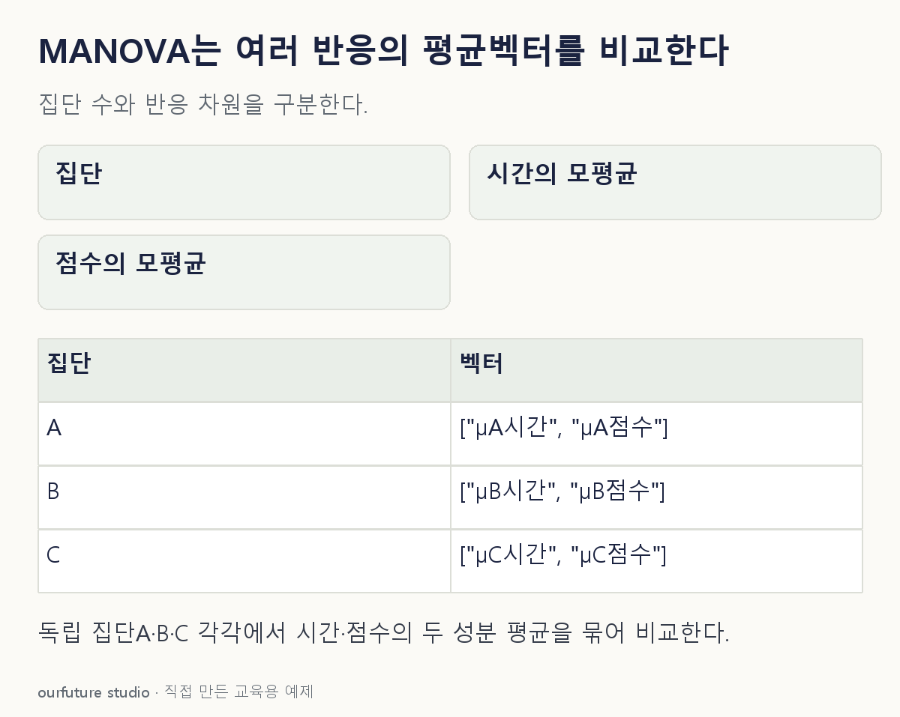

조건을 바꾸며 확인하기
기법 선택의 출발점만 판단한다. 정규성·공분산 가정을 확인하거나 p값을 산출한 것은 아니다.
설명 그림과 비교하기
아래 그림과 표는 고정된 설명 예제입니다. 기본·변형 중 어떤 조건인지 캡션을 읽고, 바꾼 입력의 결과는 계산 칸에서 확인하세요.

같은 문제를 직접 골라 보기
서로 독립인 세 교육 집단에서 각 사람의 시간·점수 두 수치 반응을 함께 측정했다. 일원 MANOVA를 검토한다.
조건을 더 바꾸면?
평균벡터 동일을 기각했다. 시간과 점수가 모두 세 집단의 모든 쌍에서 다르다고 말할 수 있는가?
변형 풀이 확인
그렇게 단정할 수 없다.
적어도 일부 집단의 평균벡터가 다르다는 결론이다. 차이를 특정하려면 계획된 대비나 개별 반응 후속 분석 및 다중비교를 검토한다.
여러 반응을 묶은 집단 평균벡터.